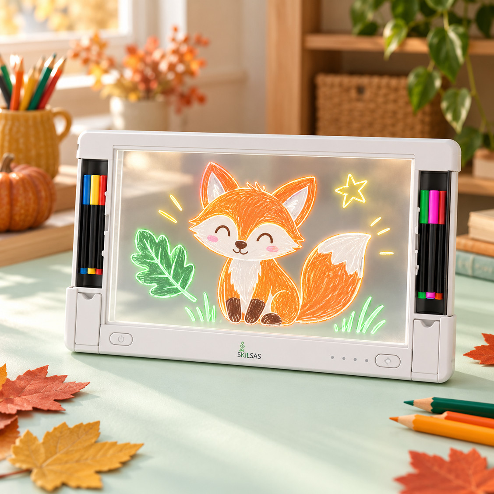

|
RUDENS KŪRYBOS POPIETĖ Kai lauke lyja,
namuose kuriam.8 idėjos spalvotai popietei be ekranų. |
 |
PIEŠINIAI, KURIE NUŠVINTA LED lenta su
markerių laikikliu5 markeriai, 9 šviesos režimai ir vieta kiekvienai naujai idėjai. 39 € |
Labas! Kai už lango pilka, ant stalo gali atsirasti visas spalvotas pasaulis. Šiai popietei atrinkau priemones, kurios kviečia piešti, spalvinti ir išbandyti ką nors naujo. |
KŪRYBOS PRADŽIA Trys maži žingsniai.| 01 | Išsirinkite priemonę Lenta, kreidelės ar akvarelė. | | 02 | Sugalvokite temą Rudens lapas, lapė ar kosmosas. | | 03 | Palikite vietos netikėtumui Tegul spalvas šiandien renkasi vaikas. |
|
|
01 / ŠVIESA IR LINIJA Nuo pirmo brūkšnio.Pieškite, kopijuokite arba kurkite visai be taisyklių. |
LED PIEŠIMO LENTA Šviečianti lenta |
|
35 × 26 cm lenta, ant kurios piešiniai nušvinta spalvomis. |
|
LIETUVIŠKAI ĮGARSINTA „Mokausi piešti“ |
|
100 dvipusių kortelių su piešimo žingsniais ir garsais. |
|
|
02 / SPALVOS ANT POPIERIAUS Daug vietos fantazijai.Kreidelės, didelis rulonas ir akvarelė su dinozaurais. |
24 SPALVOS · NUO 3 M. Šilkinės kreidelės |
|
Išsukamos, ryškios ir lengvai nuplaunamos kreidelės. |
|
DIDELIS FORMATAS · NUO 3 M. „Gyvūnų pasaulis“ |
|
Spalvinimo rulonas kūrybai vienam arba kartu. |
|
AKVARELĖ · NUO 5 M. „Dinozaurai“ |
|
26 piešiniai, integruota paletė ir 2 teptukai. |
|
|
PABANDYKITE KARTU Tik trys spalvos.Išsirinkite tris spalvas ir pabandykite visą piešinį sukurti tik jomis. Kokią nuotaiką jos sukūrė? |
|
|
03 / MAŽI EKSPERIMENTAI Kai spalvos nustebina.Raštai ant vandens ir vitražinės dekoracijos langui. |
12 SPALVŲ · NUO 6 M. Marmuravimo rinkinys |
|
Raštai kuriami ant vandens ir perkeliami ant popieriaus. |
|
LANGŲ DEKORACIJOS · NUO 6 M. „Kosmoso pasaulis“ |
|
12 vitražinių formelių, 10 dažų ir 12 siurbtukų. |
|
|
RYTOJAUS IDĖJA Sukurkite mini parodą.Išsirinkite tris šios savaitės darbelius, sugalvokite jiems pavadinimus ir surenkite parodą namuose. |
|
Kūrybai nereikia tobulo rezultato. Užtenka smalsumo pradėti. Su meile,
Ingrida |
Ką šiandien
sukursite kartu? |
|